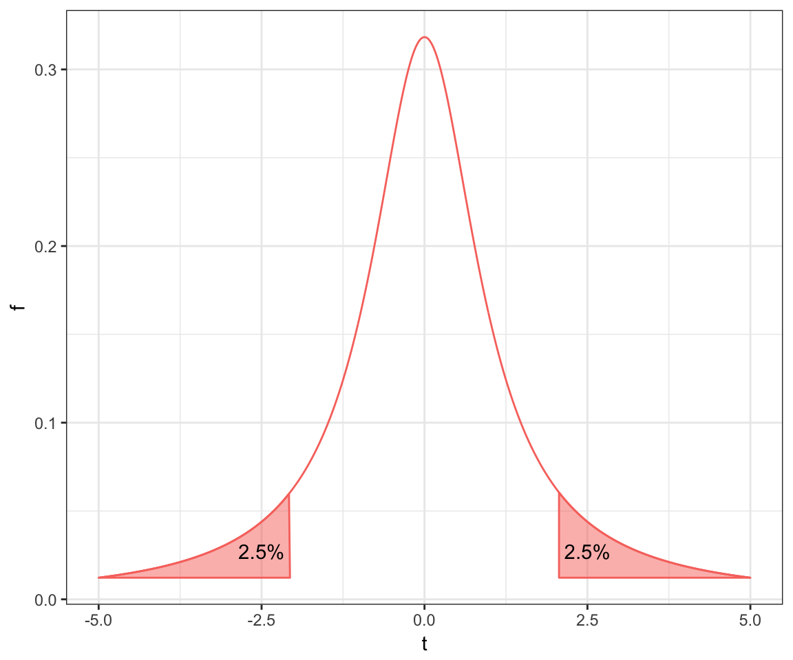
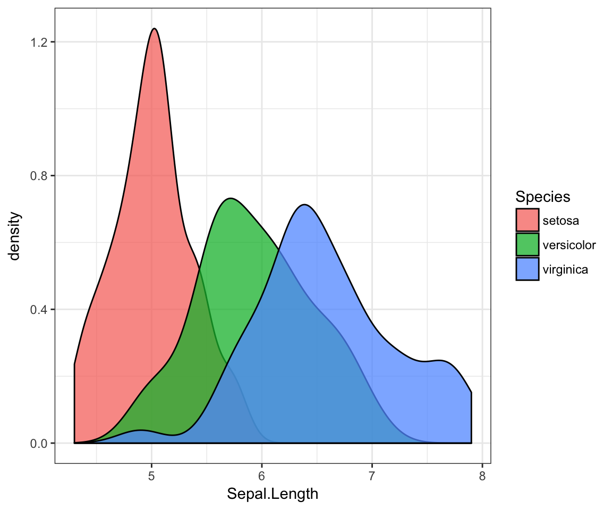
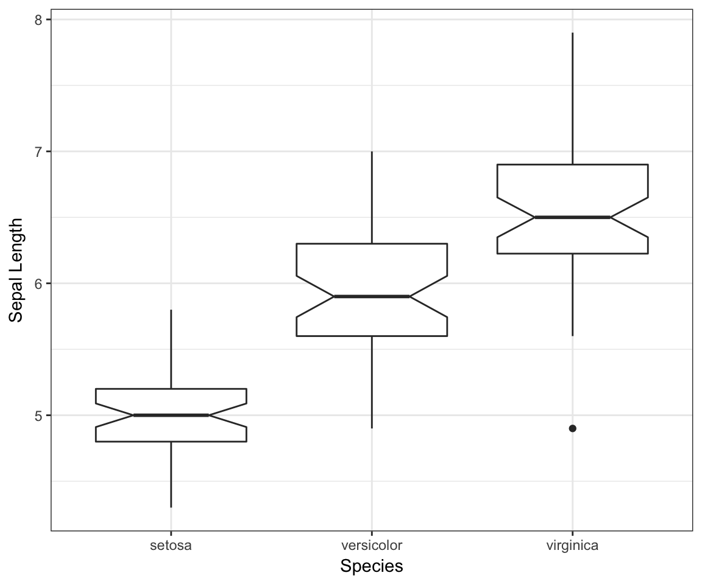
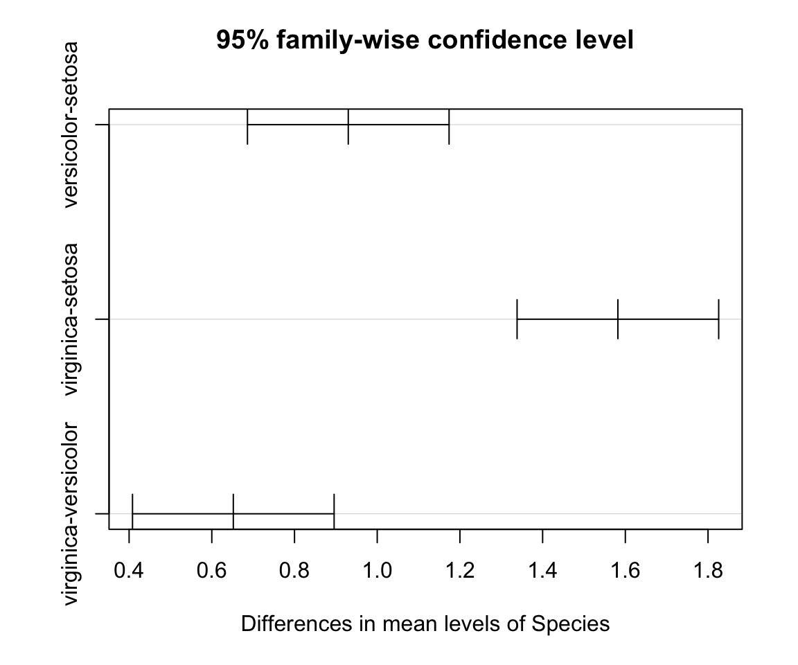

14 Analysis of Variance
Here we explore methods applicable to testing hypotheses about specific parameters, as equal to a specified value (a \(t\)-test), equal between two samples (paired \(t\)-tests), and equal among more than two groups (analysis of variance).
In this and the next section, we will examine how to tell the difference between measures of central tendency. This is applied to a single set of data, pairs of data sets, and a data set with many different groups. As we increase the complexity of these hypotheses, we will move through a series of statistical tests, starting with a one-sample \(t\)-test, a paired \(t\)-test, and then to the general analysis of variance (ANVOA) approaches. All of these methods evaluate the equality of mean values.
14.1 One Sample Hypotheses
At the most basic level, we can take a set of data and test to see if the mean of those values are equated to some particular value, \(H_O: \mu = x\) (or \(H_O: \mu = 0\) in some cases). The idea here is to determine, by specifying a value for the null hypothesis, what we expect the mean value to be equal to. Going back to our idea of hypothesis testing, the null hypothesis is the thing we are trying to disprove (with some level of statistical confidence) and in doing so we need to define a test statistic that we have an idea about its behavior. In this case, we will define Student’s \(t\)-test statistic as:
\[ t =\frac{\bar{x}-\mu}{s_{\bar{x}}} \]
where \(\bar{x}\) is the observed mean of the data, \(\mu\) is the mean value specified under the null hypothesis, and \(s_{\bar{x}}\) is the standard deviation of the data. The value of the \(t\)-statistic can be defined based upon the sample size (e.g., the degrees of freedom, \(df\)). Here is what the probability density function looks like for \(df = (1,3,\infty)\).
library( ggplot2 )
x <- seq(-5,5,by=0.02)
d <- data.frame( t=c(x,x,x),
f=c(dt(x,df=1),
dt(x,df=3),
dt(x,df=Inf)),
df=rep(c("1","3","Inf"),each=length(x)))
ggplot( d, aes(x=t,y=f,color=df)) + geom_line() 
When \(df=\infty\) then \(PDF(t) = Normal\). As such, we do not need to make corrections to understand the area under the curve, we can just use the normal probability density function. In fact, when \(df=\infty\) then \(t_{\alpha,\infty} = Z_{\alpha} = \sqrt{\chi^2_{\alpha,df=1}}\)! The take home message here is that all your statistics become much easier when \(N=\infty\), so go collect some more data!
For \(df < \infty\) (all the cases we will be dealing with), we will use the approximation defined by the \(t\) distribution. If you look at the distributions above, you see that as we increase the number of samples (e.g., as \(df\) increases), the distribution becomes more restricted. The actual function is defined (where \(df = v\) for simplicity in nomenclature) as:
\[ P(t|x,v)= \frac{ \Gamma\left( \frac{v+1}{2}\right)}{\sqrt{v\pi}\Gamma\left( \frac{v}{2}\right)} \left( 1 + \frac{x^2}{v}\right)^{-\frac{v+1}{2}} \]
where \(\Gamma\) is the Gamma function. Not pretty! Fortunately, we have some built-in facilities in R that can make it easy for us.
For a single set of data, we can use the function above to estimate a value of the \(t\) statistic. The probability distribution, defined by the degrees of freedom, identifies regions within which we may suspect the statistic to be abnormally large. In our case, though it is quite arbitrary, we can define either one or two regions of the distribution whose values would be extreme enough such that we would consider a significant deviation. For a two-tailed test, the distribution below illustrates this concept. If the estimated value of the \(t\) statistic is in either of the shaded regions, we would reject the null hypothesis of \(H_O: \mu = 0\) where \(\alpha=0.05\).
d1 <- data.frame(t=c( seq(-5,-2.064, by=0.02), -2.064, -5),
f=c( dt( seq(-5,-2.064, by=0.02),df=1), 0.01224269, 0.01224269))
d2 <- data.frame(t=c( seq(2.064,5,by=0.02), 5, 2.064),
f=c( dt( seq( 2.064, 5, by=0.02),df=1), 0.01224269, 0.01224269))
d3 <- data.frame( x=c(2.5,-2.5), y=0.02719, label="2.5%")
ggplot() +
geom_polygon(aes(t,f),data=d1, fill="#F8766D",alpha=0.5,color="#F8766D") +
geom_polygon(aes(t,f),data=d2, fill="#F8766D",alpha=0.5,color="#F8766D") +
geom_line( aes(t,f),data=d[d$df==1,], color="#F8766D") +
geom_text( aes(x,y,label=label),data=d3)In R, we can use the t.test() function. I’m going to go back to the Iris data set and use that as it has three categories (the species) and many measurements on sepals and pedals. Here I separate the species into their own data.frame objects.
df.se <- iris[ iris$Species == "setosa",]
df.ve <- iris[ iris$Species == "versicolor",]
df.vi <- iris[ iris$Species == "virginica",]Lets look at the Sepal.Length feature in these species and create some hypotheses about it.
ggplot( iris, aes(x=Sepal.Length, fill=Species)) + geom_density(alpha=0.75)
We could test the hypothesis, \(H_O: mean(Sepal.Length)=6\) for each of the species.
fit.se <- t.test(df.se$Sepal.Length, mu = 6.0)
fit.se##
## One Sample t-test
##
## data: df.se$Sepal.Length
## t = -19.94, df = 49, p-value < 2.2e-16
## alternative hypothesis: true mean is not equal to 6
## 95 percent confidence interval:
## 4.905824 5.106176
## sample estimates:
## mean of x
## 5.006From the output, it appears that we can reject that null hypothesis (\(t =\) -19.9; \(df =\) 49; \(P =\) 3.7e-25).
For I. versicolor, we see that the mean does appear to be equal to 6.0 (and thus fail to reject the null hypothesis):
t.test( df.ve$Sepal.Length, mu=6.0 )##
## One Sample t-test
##
## data: df.ve$Sepal.Length
## t = -0.87674, df = 49, p-value = 0.3849
## alternative hypothesis: true mean is not equal to 6
## 95 percent confidence interval:
## 5.789306 6.082694
## sample estimates:
## mean of x
## 5.936and for I. virginica, we find that it is significantly larger than 6.0 and again reject the null hypothesis:
t.test( df.vi$Sepal.Length, mu=6.0 )##
## One Sample t-test
##
## data: df.vi$Sepal.Length
## t = 6.5386, df = 49, p-value = 3.441e-08
## alternative hypothesis: true mean is not equal to 6
## 95 percent confidence interval:
## 6.407285 6.768715
## sample estimates:
## mean of x
## 6.588In all the output, we are also given an estimate of the Confidence Interval around the mean. This confidence interval is determined as:
\[ \bar{x} - t_{\alpha, df} s_{\bar{x}} < \mu < \bar{x} + t_{\alpha, df} s_{\bar{x}} \]
or the mean plus or minus standard deviation of the data times the value of the \(t\)-statistic for a given level of \(\alpha\) and \(df\).
14.1.1 Data Variability
There are times when reporting some confidence around a parameter is important, particularly when using tabular data as output.
Species <- c("Iris setosa","Iris versicolor","Iris virginia")
Sepal.Length <- c(mean(df.se$Sepal.Length), mean(df.ve$Sepal.Length), mean( df.vi$Sepal.Length))
Sepal.Length.SE <- c(sd(df.se$Sepal.Length), sd(df.ve$Sepal.Length), sd( df.vi$Sepal.Length))
Sepal.Length.SEM <- Sepal.Length.SE / sqrt(50)There are two ways we can talk about the data and it is important for you to think about what you are trying to communicate to your readers. These alternatives include:
sd <- paste( format(Sepal.Length,digits=2), "+/-", format(Sepal.Length.SE, digits=3))
se <- paste( format(Sepal.Length,digits=2), "+/-", format(Sepal.Length.SEM, digits=3))
df <- data.frame( Species, sd, se )
names(df) <- c("Species","Mean +/- SD", "Sepal Length +/- SE")
knitr::kable(df,row.names = FALSE,digits = 3,align = "lcc")| Species | Mean +/- SD | Sepal Length +/- SE |
|---|---|---|
| Iris setosa | 5.0 +/- 0.352 | 5.0 +/- 0.0498 |
| Iris versicolor | 5.9 +/- 0.516 | 5.9 +/- 0.0730 |
| Iris virginia | 6.6 +/- 0.636 | 6.6 +/- 0.0899 |
The two columns of data tell us something different. The middle column tells us the mean and the standard deviation of the data. This tells us about the variability (and confidence) of the data itself. The last column is the Standard Error of the Mean (\(\frac{s}{\sqrt{N}}\)) and gives us an idea of the confidence we have about the mean estimate of the data (as opposed to the variation of the data itself). These are two different statements about the data and you need to make sure you are confident about which way you want to use to communicate to your audience.
14.2 Two Sample Hypotheses
In addition to a single sample test, evaluating if the mean of a set of data is equal to some specified value, we can test the equality of two different samples. It may be the case that the average sepal length for I. versicolor is not significantly different than 6.0 whereas I. virginia is. However, this does not mean that the mean of both of these species are significantly different from each other. This is a two-sampled hypothesis, stating that \(H_O: \mu_X = \mu_Y\).
Visually, these data look like:
df <- iris[ (iris$Species %in% c("versicolor","virginica")),]
ggplot( df, aes(x=Species, y=Sepal.Length)) + geom_boxplot(notch=TRUE)
which clearly overlap in their distributions but are the mean values different? This sets up the null hypothesis:
\[ H_O: \mu_1 - \mu_2 = 0 \]
Under this hypothesis, we can use a t-test like before but just rearranged as:
\[ t = \frac{\bar{x}_1 - \bar{x}_2}{s_{\bar{x}_1-\bar{x}_2}} \]
As before, if the difference in the numerator is small we would reject but here we need to standardize the differences in the means by a measure of the standard deviation that is based upon both sets of data. This is called a the standard error of the difference in two means (real catchy title, no?). This is defined as:
\[ s_{\bar{x}_1-\bar{x}_2} = \sqrt{ \frac{s_1^2}{N_1}+\frac{s_2^2}{N}} \]
To test this, we use the same approach as before but instead of defining \(\mu = 6.0\) in the t.test() function, we instead give it both data sets.
t.test( x=df.vi$Sepal.Length, y = df.ve$Sepal.Length )##
## Welch Two Sample t-test
##
## data: df.vi$Sepal.Length and df.ve$Sepal.Length
## t = 5.6292, df = 94.025, p-value = 1.866e-07
## alternative hypothesis: true difference in means is not equal to 0
## 95 percent confidence interval:
## 0.4220269 0.8819731
## sample estimates:
## mean of x mean of y
## 6.588 5.936Here we get a few bits of new information from the analysis. It is obvious that we would reject the null hypothesis given the magnitude of the estimated \(P\)-value. The output also provides us an estimate of the mean values for each group as well as the confidence around the difference in the mean values. This confidence interval does not overlap 0.0, as it shouldn’t if we reject \(H_O: \mu_X = \mu_Y\).
14.3 Many Sample Hypotheses
If we have more than two samples, we could do a bunch of paired \(t\)-test statistics but this is not the best idea. In fact, if we do this to our data, each time testing at a confidence level of, say, \(\alpha = 0.05\), then for each time we test at \(0.05\) but over all pairs, we test at an overall level of \(0.05^k\) (where \(k\) is the number of tests) value. We cannot do multiple tests without penalizing ourselves in terms of the level at which we consider something significant if we are going to do all these tests. You may have heard about a Bonferroni correction—this does exactly that, it allows us to modify the \(\alpha\) level we use to take into consideration the number of tests we are going to use. While this may be an acceptable way to test for the equality of several means (and it may not actually be if you ask most statisticians), there is another way that is much easier.
Consider the case where we have many categories (e.g., factors in R) that we are interested in determining if the mean of all are equal. The null hypothesis for this is, \(H_O: \mu_1 = \mu_2 = \ldots = \mu_k\), where there are \(k\) different treatment levels. This is essentially what we’d want to do by doing a bunch of \(t\)-tests but we can use another approach that we don’t have to penalize ourselves for multiple tests. Here is how it works.
In the Iris data, we can visualize the means and variation around them by using box plots. Here is an example.
ggplot( iris, aes(x=Species, y=Sepal.Length)) +
geom_boxplot(notch = TRUE) +
ylab("Sepal Length")
For us to tell if there are statistical differences among the species, we need to look at both the location of the mean values as well as the variation around them. We do this by partitioning the variation in all the data into the components within each treatment (species) and among each treatment (species) using an approach derived from the sum of squared deviations (or Sums of Squares). Formally, we can estimate the sum of squares within each of the \(K\) groupings as:
\[ SS_{Within} = \sum_{i=1}^K\left( \sum_{j=1}^{N_i}(x_{ij}-\bar{x}_i)^2 \right) \]
whose degrees of freedom are defined as:
\[ df_{W} = \sum_{i=1}^K \left( N_i - 1 \right) = N-K \]
These parameters represent the deviation among samples within groups and the number of independent samples within these groups. We also need to partition out the variation among groups as a similarly defined Sums of Squares:
\[ SS_{Among} = \sum_{i=1}^K N_i\left( \bar{x}_i - \bar{x} \right)^2 \]
or the deviation among the mean of each treatment compared to the overall mean of all the data. This parameter has degrees of freedom equal to
\[ df_{A} = K - 1 \]
These two parameters describe all the data and as such \(SS_{Total} = SS_{Within} + SS_{Among}\). Formally, we see that
\[ SS_{Total} = \sum_{i=1}^K\sum_{j=1}^{N_i} (x_{ij} - \bar{x})^2 \]
whose degrees of freedom are
\[ df_{T} = N - 1 \]
For each of these Sums of Squared deviations, we can standardize them using the degrees of freedom. The notion here is that with more samples, and more treatments, we will have greater \(SS\) values. However, if we standardize these parameters by the \(df\), we can come up with a standardized Mean Squared values (simplified as \(MS = \frac{SS}{df}\) for each level).
If we look at all these values, we can create the venerable ANOVA table with Among, Within, and Total partitions of the variation.
| Source | df | SS | MS |
|---|---|---|---|
| Among | \(K-1\) | \(\sum_{i=1}^K N_i \left( \bar{x}_i - \bar{x} \right)^2\) | \(\frac{SS_A}{K-1}\) |
| Within | \(N-K\) | \(\sum_{i=1}^Kn_i\left( \sum_{j=1}^{N_i}(x_{ij}-\bar{x}_i)^2 \right)\) | \(\frac{SS_W}{N-K}\) |
| Total | \(N-1\) | \(\sum_{i=1}^K \sum_{j=1}^{N_i} (x_{ij} - \bar{x})^2\) |
In R, we can evaluate the equality of means by partitioning our data as depicted above. Essentially, if at least one of our treatments means deviate significantly, then the \(MS_A\) will be abnormally large relative to the variation within each treatment \(MS_W\). This gives us a statistic, defined by the American statistician Snedekor as:
\[ F = \frac{MS_A}{MS_W} \]
as an homage to Ronald Fisher (the F-statistic) has a pretty well understood distribution under a few conditions. This statistic has an expectation of:
\[ f(x | df_A, df_W) = \frac{\sqrt{\frac{(df_Ax)^{df_A}df_W^{df_W}}{(df_Ax + df_W)^{df_W+df_A}}}}{x\mathbf{B}\left( \frac{df_A}{2}, \frac{df_W}{2} \right)} \]
which is even more of a mess than that for the \(t\)-test! Luckily, we have a bit of code to do this for us.
Here is an example using the Iris data. Here we test the hypothesis that the Sepal Lengths are all the same (e.g., \(H_O: \mu_{se} = \mu_{ve} = \mu_{vi}\))
fit.aov <- aov( Sepal.Length ~ Species, data=iris)
fit.aov## Call:
## aov(formula = Sepal.Length ~ Species, data = iris)
##
## Terms:
## Species Residuals
## Sum of Squares 63.21213 38.95620
## Deg. of Freedom 2 147
##
## Residual standard error: 0.5147894
## Estimated effects may be unbalancedThe function called here, aov() is the one that does the Analysis of Variance. It returns an object that has the necessary data we need. To estimate the ANOVA table as outlined above we ask for it as:
anova(fit.aov)## Analysis of Variance Table
##
## Response: Sepal.Length
## Df Sum Sq Mean Sq F value Pr(>F)
## Species 2 63.212 31.606 119.26 < 2.2e-16 ***
## Residuals 147 38.956 0.265
## ---
## Signif. codes: 0 '***' 0.001 '**' 0.01 '*' 0.05 '.' 0.1 ' ' 1which shows that the “Species” treatment are significantly different from each other, with an \(F\) statistic equal to \(F = 119.3\), which with 2 and 147 degrees of freedom is assigned a probability equal to \(2e^{-16}\), a very small value!
14.3.1 Post-Hoc Tests
What this analysis tells us is that at least one of the treatment means are different from the rest. What it does not tell us is which one or which subset. It could be that I. setosa is significantly smaller than both I. versitosa and I. virginia. It could be that I. virginia is significantly larger than the others, who are not different. It could also mean that they are all different. To address this, we can estimate a post hoc test, to evaluate the difference between treatment means within this model itself.
One of the most common ways to evaluate the equality of treatment mean values is that defined by Tukey. The so-called “Honest Significant Differences” post hoc test is given by
tuk <- TukeyHSD(fit.aov)
tuk## Tukey multiple comparisons of means
## 95% family-wise confidence level
##
## Fit: aov(formula = Sepal.Length ~ Species, data = iris)
##
## $Species
## diff lwr upr p adj
## versicolor-setosa 0.930 0.6862273 1.1737727 0
## virginica-setosa 1.582 1.3382273 1.8257727 0
## virginica-versicolor 0.652 0.4082273 0.8957727 0which breaks down the pair-wise differences in the mean of each treatment. Here we see the magnitude of the differences in mean values, the lower and upper confidence on the differences, and the probability associated with these differences. In this example, all three comparisons are highly unlikely (e.g., \(P\) is very small and in this case essentially zero). As a result, we can interpret these results as suggesting that each of the three species have significantly different. If we plot these results, we see which ones are larger and which are smaller.
plot( tuk )
Which shows the difference between treatment mean between all pairs of treatments. Overall, we see that the Iris species are all significantly different.